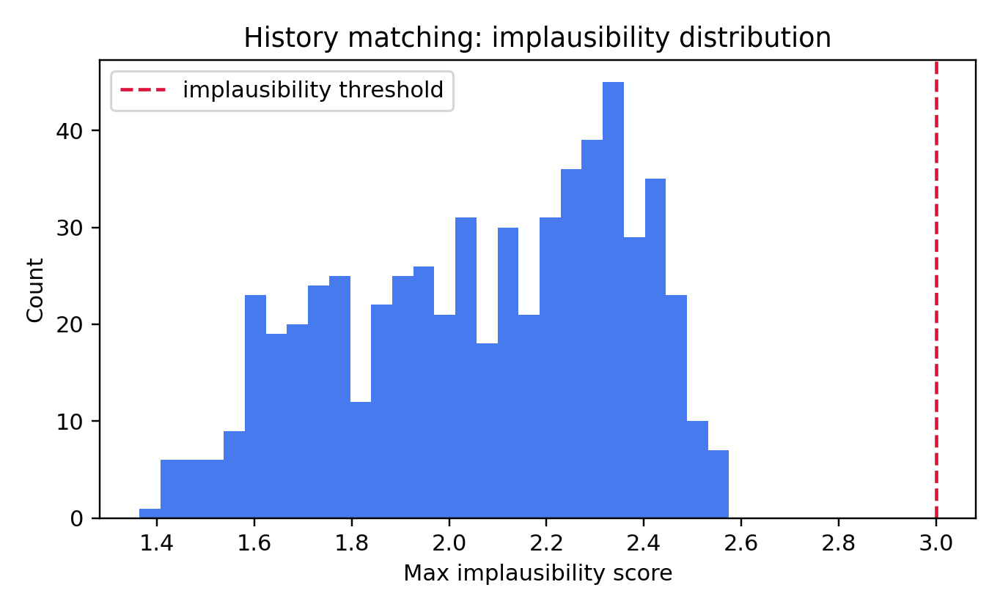

Emulator + history matching summary
Emulation + History Matching Report
- Training runs: 24 - Candidate points screened by emulator: 600 - Best emulator: GaussianProcessMatern32 - NROY count: 600 (100.0%)
Best plausible candidate (checked in full simulator)
- Targets passed: 3/6 - myofibro_fraction_high_signal: 0.9375 vs [0.6, 0.9] -> FAIL - profibrotic_index_high_signal: 0.5459 vs [0.65, 0.95] -> FAIL - alignment_high_load: 0.9171 vs [0.78, 0.98] -> PASS - collagen_fraction_load_signal: 10.4446 vs [8.0, 20.0] -> PASS - infarct_core_collagen: 13.5540 vs [12.0, 60.0] -> PASS - infarct_core_to_remote_ratio: 1.2914 vs [1.5, 6.0] -> FAILPlausible parameter-space bounds (NROY envelope)
- signaling_network.k_tgfr_smad: [0.4005, 2.595] - signaling_network.k_at1r_erk: [0.32, 2.08] - signaling_network.d_smad: [0.03042, 1.569] - signaling_network.d_erk: [0.03671, 1.564] - cells.myo_switch_threshold: [0.05445, 0.8456] - cells.myo_switch_softness: [0.009757, 0.1503] - cells.myo_cap: [0.3982, 1.365] - infarct.collagen_source: [0.003624, 0.05636] - infarct.signal_source: [0.03742, 0.5635] - infarct.dispersion_core: [0.04243, 0.6543] - infarct.dispersion_border: [0.06752, 1.03] - infarct.dispersion_remote: [0.09168, 1.402]History matching usage guidance
1. Start with broad physically credible parameter bounds and a small training design (20-40). 2. Fit emulator and inspect predictive quality (R2/RMSE). If poor, add design points. 3. Define observations as target means + uncertainty variances from literature bands. 4. Compute implausibility and NROY region; do not trust single-wave NROY blindly. 5. Iterate waves: sample within NROY, run simulator, refit emulator, shrink bounds. 6. QC at each wave: emulator accuracy on holdout, NROY fraction trend, and simulator re-check of selected NROY points.
Extra history-matching waves
Emulation History-Matching Waves
Wave 1
- Best emulator: GaussianProcessRBF - NROY: 300/300 (100.0%) - Full-simulator pass count: 5/6Wave 2
- Best emulator: GaussianProcessMatern32 - NROY: 300/300 (100.0%) - Full-simulator pass count: 5/6Wave 3
- Best emulator: GaussianProcessMatern32 - NROY: 298/300 (99.3%) - Full-simulator pass count: 3/6Wave 4
- Best emulator: GaussianProcessRBF - NROY: 300/300 (100.0%) - Full-simulator pass count: 4/6Final bounds
- signaling_network.k_tgfr_smad: [0.06501, 2.909] - signaling_network.k_at1r_erk: [0.06891, 2.35] - signaling_network.d_smad: [-0.2145, 1.805] - signaling_network.d_erk: [-0.1719, 1.802] - cells.myo_switch_threshold: [-0.067, 0.9608] - cells.myo_switch_softness: [-0.01099, 0.1691] - cells.myo_cap: [0.2487, 1.517] - infarct.collagen_source: [-0.004714, 0.06484] - infarct.signal_source: [-0.04531, 0.6476] - infarct.dispersion_core: [-0.0393, 0.7505] - infarct.dispersion_border: [-0.0789, 1.184] - infarct.dispersion_remote: [-0.113, 1.61]Wave Orchestrator (single-script diagnosis)
Wave Orchestrator Report
Pipeline steps
- `/home/snie007/Documents/project/2026/freeze_combined_out7/.venv/bin/python -m src.tools.extract_quantitative_evidence` -> code 0 - `/home/snie007/Documents/project/2026/freeze_combined_out7/.venv/bin/python -m src.tools.quantitative_match_metric` -> code 0 - `emulation_waves.main(n_waves=4,n_train=24,n_candidates=300)` -> code 0 - `sensitivity_analysis.main(n_train=18,n_candidates=260,n_verify=10)` -> code 0Diagnosis
- Calibration targets pass: 6/6 - Paper-anchored quantitative match: PASS 2, PARTIAL 8, FAIL 39, UNMAPPED 2 - History matching wave pass trend: [5, 5, 3, 4] - NROY fraction trend: [1.0, 1.0, 0.993, 1.0]Fail taxonomy
- parameter_miss: 37 - observation_mismatch: 10 - missing_mechanism_or_unmapped: 2Suggested next actions
- Add observation-model mapping layer (paper endpoint -> model observable transform) to reduce observation mismatch fails. - Expand signaling complexity: VEGF/Notch/HIF modules for angiogenesis-related studies. - Refine infarct zone kinetics (core/border/remote separate source/decay kernels). - Constrain tuning to top sensitive parameters and re-run waves with narrowed bounds.Top-3 narrowed-bound local refinement
Top-3 Parameter Local Refinement
- Samples: 6 - Top parameters: signaling_network.d_smad, cells.myo_switch_threshold, signaling_network.k_at1r_erk
Best candidates
- sample 1: pass 6/6, params={'signaling_network.d_smad': 0.11163029275444215, 'cells.myo_switch_threshold': 0.6205979672362096, 'signaling_network.k_at1r_erk': 2.437495427462643} - sample 3: pass 6/6, params={'signaling_network.d_smad': 0.11778984710720483, 'cells.myo_switch_threshold': 0.6014122042938445, 'signaling_network.k_at1r_erk': 2.3672894382497858} - sample 4: pass 6/6, params={'signaling_network.d_smad': 0.10719794229705779, 'cells.myo_switch_threshold': 0.6016117451404509, 'signaling_network.k_at1r_erk': 2.125908736974283} - sample 0: pass 5/6, params={'signaling_network.d_smad': 0.12584115152953684, 'cells.myo_switch_threshold': 0.6675712495363413, 'signaling_network.k_at1r_erk': 2.1893199210629772} - sample 2: pass 5/6, params={'signaling_network.d_smad': 0.12281988525391391, 'cells.myo_switch_threshold': 0.6770727884866052, 'signaling_network.k_at1r_erk': 2.1194523685189806}Emulation QC checklist
Emulation QC Checklist
- [ ] Training design covers full parameter ranges (no collapsed dimensions). - [ ] Emulator holdout metrics acceptable (R2 not strongly negative across outputs). - [ ] NROY fraction decreases across waves (or justified if not). - [ ] At least 10 NROY points re-evaluated in full simulator and compared to emulator. - [ ] Best candidate verified against all 6 calibration targets using full simulator. - [ ] Parameter bounds for next wave generated from NROY with modest buffer (5-10%).
How to use history matching in FibroTwin
History Matching Quick Guide for FibroTwin
This project uses AutoEmulate as a surrogate model to accelerate calibration.